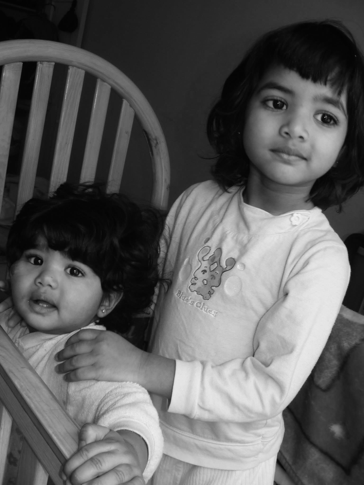

The Founders
SUN & MOON
“Before there was a House, there were two sisters.”
Sun and Moon, New York, 2026
Sun was born in Canada. Moon was born in New York. Raised together between New York, New Jersey and Florida, the sisters grew up in a world where change was constant and music was part of daily life.
Their father died while they were still children. Their mother raised the family while working full time, teaching them early that stability was something created rather than inherited.
Home changed often. Schools changed. Cities changed. Through each move, music, image and performance remained the thread that continued.
BEGINNINGS

Performance entered their lives before either sister understood it as a profession. Rehearsals, recordings, small stages and cameras formed part of childhood.
Music was not introduced as an escape. It was simply present — a routine, a discipline, and eventually a language they could carry from one place to another.
PERFORMERS
As children, Sun and Moon performed in a family band, learning early how sound, clothing, stage presence and audience could change the feeling of a room.
Those first performances were not polished, but they established a lasting instinct: every appearance carries meaning.
NEW YORK
Returning to New York marked the beginning of a new chapter. Between castings, recording sessions, borrowed rooms and long editing nights, the sisters began to build their own visual world.
Cameras, computers, lenses, microphones and software became their tools. Rather than waiting for a finished team, they learned to make the work themselves.
SELF-TAUGHT
Recording, editing, photography, lighting, web design, creative direction and product research became part of the same education.
Each release taught them another discipline. Each new discipline made the world of STARGIRLS more complete.
THE CODES
Their codes are recurring: black and white, silver and gold, skin and shadow, water and light, the stage and the private room.
Sun gives movement to the work. Moon gives it structure. One imagines atmosphere first; the other studies how the world should be built.
Together, they protect the contrast between them. STARGIRLS exists in that contrast.
SUN
Sun first imagined STARGIRLS as a world rather than a single project. Songs, images, performance, fragrance and atmosphere belonged to the same vision.
Her work begins with the feeling of a scene: light, movement, voice, styling and the memory left after the performance ends.
MOON
Moon became interested in the architecture behind lasting work: typography, systems, packaging, product development and the invisible decisions that give an object permanence.
She approaches the House through structure, research and refinement, searching for the reason each element belongs.
THE HOUSE

STARGIRLS began with music, but it was never imagined as music alone.
Each era is conceived as a complete world capable of extending into film, fragrance, image and future objects while remaining connected by one visual language.
The first era, ANEW, introduced the sound. The first fragrances, SUN and MOON, begin the House of scent.
IN THEIR WORDS
“Beauty is everlasting.”
“Success is built.”
“Freedom is within.”
“Art is creation.”
“Quality endures.”
“Nothing replaces craftsmanship.”